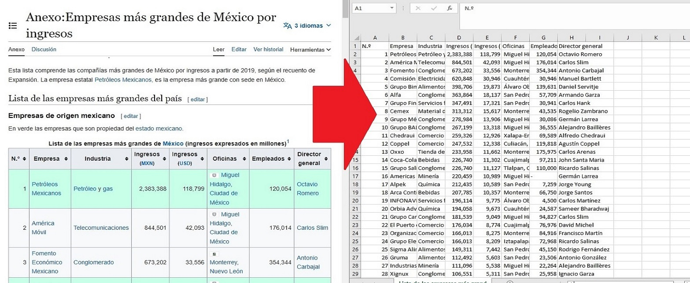

Wikipedia tables scraper
Program created to extract simple tables from any Wikipedia page, transform it to .csv and save the file locally, enabling streamlined analysis.
It was created using mainly the BeautifulSoup and the Pandas library to parse through the data and transform it into tables. Aditionally, some extra libraries were used to create folders and check for created data.
This python program asks the user for a Wikipedia link that was previously selected by the user and parses through it, locating all the table titles available in that particular page.
If the program finds headers it prompts the user to select a table to retrieve. Otherwise, if table headers are not found, the program notifies the user, counts how many tables were found (without header) and asks the user if he wants to retrieve all of them.
Here are some explanations for the code, that you can find here:
def retr_all_tables():
id = 0
files_saved = 0
tables = soup.find_all('table')
print('Retrieving',len(tables),'tables...')
for table in tables:
try:
print('Retrieving table', id+1,'...')
tab = soup.find_all('table')[id]
# add title columns to DataFrame
titles = table.find_all('th')
table_titles = [title.text.rstrip() for title in titles]
df = pd.DataFrame(columns = table_titles)
# Fill data into DataFrame
column_data = table.find_all('tr')
for row in column_data[1:]:
row_data = row.find_all('td')
individual_row_data = [data.text.rstrip() for data in row_data]
length = len(df)
df.loc[length] = individual_row_data
# look for directory or create new one
newpath = r'C:\Users\AlanG\OneDrive - Universidad de Guadalajara\Desktop\Tables'
if not os.path.exists(newpath):
os.makedirs(newpath)
# saving file
csv_name = newpath + '\\table' + str(id + 1) + '.csv'
try:
df.to_csv(csv_name, index = False, encoding="latin1") #latin 1 encoding will show better in excel using characters like 'áéíóú'
ncode = "latin1"
except:
df.to_csv(csv_name, index = False, encoding="utf-8")
ncode = "utf-8"
print('table' + str(id + 1) + '.csv saved.')
id += 1
files_saved += 1
except:
print("table", str(id + 1), "couldn't be saved.")
id += 1
pass
print('Completed.')
print('All', str(files_saved), 'files saved in', newpath)
quit()Defining a function called retr_all_tables to make the program shorter. This function will parse the page entered from user input to find all the table tags in the html.
After getting all the tables an iteration is created in for table in tables:. This iteration will first get the data in the headers (th) and add them to a dataframe in Pandas. After that, the function will look for the row data (td) and iterate through it in for row in column_data[1:]: to get all the data from every row (td) and fill the previous dataframe that already contains the headers.
After the dataframe is ready, the function will look for the mentioned path to create a new path to save the files using the os library. The function will then transform the dataframe into a .csv file and then save it into the path created.
This function will iterate through every table found, retrieving all the tables or notifying if a table couldn't be saved.
# Ask for a valid Wikipedia URL
while True:
try:
url = input('Insert a Wikipedia URL:')
if 'wikipedia' not in url and 'https' in url:
print('Please insert a Wikipedia URL.')
continue
page = requests.get(url)
soup = BeautifulSoup(page.text,'html')
break
except:
print('Please insert a valid URL')
continueThe program will prompt the user for a Wikipedia page, other inputs will fail and the program will keep prompting until a Wikipedia page is submitted.
print('Trying to retrieve table names...\n')
# try to retrieve table names
table_captions = soup.find_all('caption')
captions = [caption.text.rstrip() for caption in table_captions]
# if table names are not found
if len(captions) == 0:
tablecount = soup.find_all('table')
print("Couldn't retrieve table names, but",len(tablecount), 'tables were found.')
print("Do you wish to save all tables?")
while True:
retrieve_all = input('(Y/N)>')
retrieve_all = retrieve_all.upper()
if retrieve_all == 'Y':
retr_all_tables()
print('Complete.\nExiting program...')
sys.exit()
if retrieve_all == 'N':
print('Exiting program...')
sys.exit()
else:
print('Plase insert a valid option.')
continueHere the program will look for the captions in the tables, which are commonly the table titles. If no captions are found, the program will count all the tables available in the page and display the count along with a prompt for the user to select to either retrieve all tables or exit the program. If the user selects to retrieve all the tables, function retr_all_tables() will be called to retrieve, transform and save all available tables, each one in a separate .csv file.
# if table names are found
if len(captions) > 0:
id = 0
titles_list = list()
print('Please select a table number to retrieve:\n')
for caption in captions:
id += 1
titles_list.append(caption)
print('[',id,']', caption)
print('[ 0 ]', 'Retrieve all tables (may retrieve addional tables were no title was found)')
# ask for a table number if found
table_number = input('Insert table number:')
table_number = int(table_number)If the program finds at least one title, it will display all the titles found in a list to the user and ask which table to retrieve. Finally, if the user selects a single table to retrieve, the program will do something like the retr_all_tables() function, but using the index from the table selected and using .find instead of .find_all, selecting a single table will also save the .csv file with the table title.

Here's one demonstration of the program transforming and saving the first table from this Wikipedia page.
Finally, this program can only retrieve tables with simple headers, such as a 1 row header, but I will be looking to update it to be able to retrieve more complex tables.